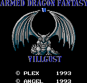

Villgust - Nintendo Games

- Company: Angel
- Date Released: 1993
- Genre: RPG
Controls
- A button: Jump (during battle)
- B button: Attack (during battle)
- Start: ???
- Select: ???
The actual battles are done in a platform game style.
Anime Video Game Resource Center © 1998 by Luis A. Cruz